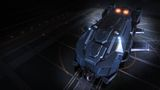

Трюм под руду (на практике)
~230–260 т
Вместительный трюм и хорошая дальность прыжка с грузом за менее чем 17 млн кредитов, без требований к рангу. Добывает руду в больших объёмах и легко добирается до дальних и спокойных зон концентрации, но не может за себя постоять. При этом средний Type-8 вмещает больше. Поэтому ниша узкая: недорогая добыча с большой площадки в дальних и более безопасных кольцах.

Оценка пригодности корабля от 1 до 100 учитывает его полностью улучшенную сборку и сравнивает её с другими кораблями в этой роли. Подробнее: как оцениваются корабли.
Type-7 Transporter подходит для недорогой добычи в больших объёмах: около 310 тонн вместимости под руду плюс полный комплект оборудования менее чем за 17 млн кредитов. Дальность с полным трюмом лучше, чем у большинства переоборудованных грузовиков. Можно добраться до дальних зон концентрации, где меньше народу, и привезти полный трюм без лишних прыжков. Для торговца, решившего заняться добычей, это доступный способ нарастить объём.
Однако корабль медленный и слабо защищённый: пиратам, которые охотятся на гружёных добытчиков, он противопоставляет только щит и отход. К тому же рассчитанный на среднюю площадку Type-8 вмещает больше руды и садится в большем числе мест. Преимущество Type-7 узкое: за небольшие деньги получаете добытчика для больших площадок с хорошей дальностью. Он особенно полезен в дальних и безопасных зонах концентрации, где пиратов мало.
Недорогая лазерная добыча большими партиями в спокойных дальних кольцах, где важна дальность с полным трюмом и редко встречаются пираты.
Четыре особенности Type-7 в добыче:
Он медленный и не может отбиться от пиратов: четыре малые точки подвески и слабые щиты. При этом средний Type-8 вмещает больше руды и садится в большем числе мест. Четыре малые точки подходят для лазерной и подповерхностной добычи, но ограничивают выбор оборудования для подрыва астероидов. Сильная сторона Type-7 — вместительный недорогой трюм и дальность. При этом Type-8 и Python оба превосходят его в своих нишах.
Трюм примерно на 310 т и около 34 св. лет с грузом после инженерных улучшений менее чем за 17 млн кредитов, без требований к рангу. Недостатки — расчёт только на отход и большая площадка, хотя средний Type-8 вмещает больше руды.
78/100 — итог по критериям добычи в порядке их важности. У каждого критерия есть вес (его доля из 100). Баллы по нему зависят от того, как корабль показал себя на фоне остальных. Сумма баллов даёт итоговую оценку.
| Критерий | Баллы | Почему столько |
|---|---|---|
| Полезная вместимость под руду | 29/35 | Максимальная вместимость около 310 т, на практике под руду остаётся примерно 230–260 т после установки щита и оборудования. Десять дополнительных слотов (6·6·6·5·5·5·3·3·2·1) позволяют увезти большую партию, но крупные Cutter (~794 т), Type-9 (~790 т) и Anaconda (~470 т), а также средний Type-8 (~406 т) вмещают больше. |
| Вместимость под инструменты | 21/25 | В четыре малые точки ставятся два добывающих лазера, абразивный бластер и ракета для извлечения подповерхностных залежей. Четыре вспомогательных крепления вмещают анализатор импульсных волн и усилители. В десяти дополнительных слотах есть место для переработчика, контроллеров разведчиков и сборщиков и грузовых стеллажей. Большие инструменты подрыва не поставить, но оборудование для добычи всё равно бывает только малого или среднего размера. |
| Живучесть | 7/15 | Защита только для отхода: двухконтурный щит 6C и два усилителя помогут выдержать огонь пирата, пока вы уходите. Корабль медленный: базовые 182/304 м/с, около 340 м/с на форсаже после улучшений. От грабителей он не отобьётся, поэтому выбирайте тихие кольца и уходите в прыжок. |
| Площадка и доступ | 12/15 | Требуется большая площадка, но не нужен ранг или пропуск. Посадочных мест меньше, чем у средних Type-8 и Python, так что не все аванпосты и малые станции по пути доступны. |
| Цена и специализация | 9/10 | Корпус ~16,8 млн кредитов, сборка класса A ~22 млн, с инженерными улучшениями ~30 млн, без требований к рангу. Один из самых доступных вариантов массовой добычи для больших площадок: дорогим специализированным кораблям он уступает только вместимостью. |
| Взвешенный итог | 78/100 | Эта сумма совпадает с общей оценкой корабля в этой роли. |
Вес критерия отражает приоритеты авторов гайда, а не формулу игры. Длина полосы показывает, какую долю от максимума корабль набрал по этому критерию. Подробнее: как оцениваются корабли.
Таблицы сравнивают корабли именно для добычии разделяют их по размеру посадочной площадки. Столбец Макс. груз указывает максимальный груз руды в тоннах. Пригодность оценивается по общей шкале сайта от 1 до 100.
| Корабль | Класс | Макс. груз | Плюсы и минусы | Оценка |
|---|---|---|---|---|
| Imperial Cutter | Большая | ~794 т | Выше оценка; оснащение; живучестьПосадочная площадка | 92 |
| Type-9 Heavy | Большая | ~790 т | Выше оценка; трюм; ценаЖивучесть | 90 |
| Anaconda | Большая | ~470 т | Выше оценка; оснащение; живучестьПосадочная площадка | 86 |
| Type-7 Transporter этот | Большая | ~310 т | — отправная точка для сравнения | 78 |
| Panther Clipper Mk II | Большая | ~662 т | Трюм; оснащениеНиже оценка; цена | 77 |
| Imperial Clipper | Большая | ~250 т | Цена; живучестьНиже оценка; доступ к площадкам | 70 |
| Type-10 Defender | Большая | ~534 т | Живучесть; оснащениеНиже оценка; цена | 70 |
| Federal Corvette | Большая | ~618 т | Живучесть; трюмНиже оценка; цена | 64 |
| Caspian Explorer | Большая | ~434 т | Оснащение; живучестьНиже оценка; цена | 60 |
Из девяти оценённых кораблей для больших площадок лидирует Imperial Cutter (92). Это прямые конкуренты с такими же требованиями к посадке.
| Корабль | Класс | Макс. груз | Плюсы и минусы | Оценка |
|---|---|---|---|---|
| Type-11 Prospector | Средняя | ~288 т | Выше оценка; оснащение; доступ к площадкамЦена | 95 |
| Python | Средняя | ~294 т | Выше оценка; оснащение; живучестьТрюм под руду | 90 |
| Krait Mk II | Средняя | ~230 т | Выше оценка; живучесть; доступ к площадкамТрюм под руду | 84 |
| Type-8 Transporter | Средняя | ~406 т | Выше оценка; трюм; оснащениеЖивучесть | 84 |
| Krait Phantom | Средняя | ~190 т | Доступ к площадкам; оснащениеНиже оценка; живучесть | 70 |
| Corsair | Средняя | ~318 т | Живучесть; доступ к площадкамНиже оценка; цена | 68 |
| Keelback | Средняя | ~98 т | Живучесть; доступ к площадкамНиже оценка; трюм | 68 |
| Asp Explorer | Средняя | ~130 т | Оснащение; доступ к площадкамНиже оценка; живучесть | 64 |
| Type-6 Transporter | Средняя | ~114 т | Цена; доступ к площадкамНиже оценка; живучесть | 62 |
Из девяти оценённых кораблей для средних площадок лидирует Type-11 Prospector (95). Это варианты другого класса посадочных площадок, с иной ценой и характеристиками.
| Корабль | Класс | Макс. груз | Плюсы и минусы | Оценка |
|---|---|---|---|---|
| Cobra Mk V | Малая | ~110 т | Доступ к площадкам; оснащениеНиже оценка; трюм | 58 |
| Cobra Mk III | Малая | ~64 т | Доступ к площадкам; ценаНиже оценка; живучесть | 52 |
| Adder | Малая | ~30 т | Доступ к площадкам; ценаНиже оценка; живучесть | 48 |
Из трёх оценённых кораблей для малых площадок лидирует Cobra Mk V (58). Это более дешёвые корпуса для небольших площадок. Характеристики скромнее, зато требования к посадке другие.
Примерно за 16,8 млн кредитов Type-7 недорог для добытчика под большую площадку и не требует ранга. С оснащением для добычи он обойдётся примерно в 30 млн.
Хорош для бюджетной добычи большими партиями, когда помогает дальность с грузом. Но сравните его со средним Type-8: тот вмещает больше и садится в большем числе мест за чуть большие деньги.
Около 30 млн кредитов за комплект с большим трюмом и хорошей дальностью. Хотя средний Type-8 вмещает больше и имеет больше вариантов посадки.
Недорогая сборка под лазерную добычу в больших объёмах, с большим трюмом и двухконтурным щитом для отхода. Стартовая сборка — минимальный набор из доступных в продаже модулей: один лазер, переработчик, контроллеры дронов-разведчиков и сборщиков. Сборка класса A — полный базовый комплект. Инженерные улучшения нужны для дальности и выживания, а не для самого добывающего оборудования.
| Отсек | Начальная · только покупка | Класс A · без улучшений | С инженерными улучшениями | Примечания |
|---|---|---|---|---|
| Оружейные крепления | ||||
| Малое 1 | 1D Добывающий лазер (неподвижный) | 1D Добывающий лазер (неподвижный) | (нет чертежа улучшения) | Основной добывающий лазер; на старте ставится только один дешёвый малый неподвижный лазер. Добывающее оборудование не улучшают у инженеров. |
| Малое 2 | — | 1D Добывающий лазер (неподвижный) | (нет чертежа улучшения) | Второй добывающий лазер удваивает выход обломков после того, как окупится корпус. У инженеров не улучшается. |
| Малое 3 | — | 1D Абразивный бластер (неподвижный) | (нет чертежа улучшения) | Абразивный бластер сбивает отложения с поверхности астероида. У инженеров не улучшается. |
| Малое 4 | — | 1B Ракета для извлечения подповерхностных залежей (неподвижный) | (нет чертежа улучшения) | Подповерхностная вытесняющая ракета извлекает залежи из-под поверхности. У инженеров не улучшается. |
| Внешние крепления | ||||
| Крепление 1 | — | 0A Анализатор импульсных волн | (нет чертежа улучшения) | Импульсный анализатор подсвечивает богатые астероиды в кольце. Для сканеров инженерных чертежей нет. |
| Крепление 2 | — | 0A Усилитель щита | G5 Усиленная конструкция + Суперконденсаторы | Усиленная конструкция повышает прочность двухконтурного щита в МДж, чтобы пережить отход. Суперконденсаторы добавляют ещё. |
| Крепление 3 | — | 0A Усилитель щита | G5 Усиленная конструкция + Суперконденсаторы | Второй усилитель с «Усиленной конструкцией»: недорогой способ заметно повысить прочность щита для отхода. |
| Крепление 4 | — | 0I Теплоотводная катапульта | G1 Дополнительный боезапас (без экспериментального эффекта) | Необязательно. Дополнительный боезапас даёт больше теплоотводов. Они снимают нагрев при скрытном ходе и помогают сбросить температуру. |
| Основные модули | ||||
| Обшивка | Лёгкий сплав | Лёгкий сплав | Облегчение G5 + Глубокое бронирование | |
| Силовая установка | 5E Силовая установка | 5A Силовая установка | G5 «Низкие выбросы» + Рассеивание тепла | «Пониженные выбросы» помогают установке оставаться холодной на долгой добыче, а «Рассеивание тепла» дополнительно снижает нагрев. |
| Маневровые двигатели | 5E Маневровые двигатели | 5A Маневровые двигатели | G5 Грязная настройка двигателей + Форсированные двигатели | Класс A с улучшением «Грязная настройка» дают скорость на форсаже, чтобы уйти после перехвата с полным трюмом. |
| Рамочно-сместительный двигатель (FSD) | 5E Рамочно-сместительный двигатель (FSD) | 5A Рамочно-сместительный двигатель (FSD) | G5 «Увеличенная дальность» + Управление массой | «Увеличенная дальность» в первую очередь, чтобы использовать дальность с грузом для работы в дальних тихих кольцах. «Управление массой» увеличит её ещё. |
| Система жизнеобеспечения | 4E Система жизнеобеспечения | 4D Система жизнеобеспечения | G5 Облегчение (без экспериментального эффекта) | Класс D уменьшает массу, а Облегчение снижает её ещё сильнее. У системы жизнеобеспечения нет экспериментального эффекта. |
| Распределитель энергии | 4E Распределитель энергии | 4A Распределитель энергии | G3 Упор на двигатели (без экспериментального эффекта) | Класс A нужен для непрерывной работы лазеров и дронов; Упор на двигатели обеспечивает форсаж для отхода. |
| Сенсоры | 3E Сенсоры | 3D Сенсоры | G5 Облегчение (без экспериментального эффекта) | Поставь класс D и «Облегчение»: шахтёру большая дальность сенсоров не нужна. |
| Топливный бак | 5C Топливный бак | 5C Топливный бак | (нет чертежа улучшения) | Штатный бак класса C. Вместимость фиксированная, инженерных улучшений нет. |
| Дополнительные отсеки | ||||
| Размер 6 | 6E грузовой стеллаж | 6E грузовой стеллаж | (нет чертежа улучшения) | Необязательно. Дополнительное место под груз пригодится при перевозках. Грузовые стеллажи нельзя улучшить у инженеров. |
| Размер 6 | 6E грузовой стеллаж | 6E грузовой стеллаж | (нет чертежа улучшения) | Необязательно. Дополнительное место под груз пригодится при перевозках. Грузовые стеллажи нельзя улучшить у инженеров. |
| Размер 6 | — | 6C Генератор двухконтурного щита | G5 Усиленный + Быстрая зарядка | Двухконтурный щит быстро восстанавливается под огнём. Усиление повышает прочность в МДж, а быстрая зарядка ускоряет восстановление для отхода. |
| Размер 5 | 4A Переработчик | 4A Переработчик | G5 Защищённый (без экспериментального эффекта) | Необязательно. «Защищённый» повышает прочность переработчика. Он превращает собранные обломки в товар. |
| Размер 5 | — | 5E грузовой стеллаж | (нет чертежа улучшения) | Необязательно. Дополнительное место под груз пригодится при перевозках. Грузовые стеллажи нельзя улучшить у инженеров. |
| Размер 5 | 5A Контроллер дронов-сборщиков | 5A Контроллер дронов-сборщиков | G5 Облегчение (без экспериментального эффекта) | Необязательно. «Облегчение» уменьшает массу контроллера. Он запускает дронов-сборщиков. |
| Размер 3 | — | 3E грузовой стеллаж | (нет чертежа улучшения) | Необязательно. Дополнительное место под груз пригодится при перевозках. Грузовые стеллажи нельзя улучшить у инженеров. |
| Размер 3 | 3A Контроллер дронов-разведчиков | 3A Контроллер дронов-разведчиков | G5 Облегчение (без экспериментального эффекта) | Необязательно. «Облегчение» уменьшает массу контроллера. Он запускает дронов-разведчиков. |
| Размер 2 | — | 1A Контроллер дронов-сборщиков | G5 Облегчение (без экспериментального эффекта) | Необязательно. «Облегчение» уменьшает массу контроллера. Он запускает дронов-сборщиков. |
| Размер 1 | 1I Подробный сканер поверхности | 1I Подробный сканер поверхности | (нет чертежа улучшения) | Необязательно. Улучшение увеличивает площадь, которую покрывает каждый зонд при составлении карты планеты. |
| Планировщики и экспорт | ||||
| Открыть в Coriolis | открыть | открыть | открыть | Открывает сборку на coriolis.io. |
| Открыть в EDSY | открыть | открыть | открыть | Открывает сборку на edsy.org. |
| Скопировать SLEF | Копирует выбранную сборку в формате экспорта оснащения корабля (SLEF). | |||
Поставьте лазеры, переработчик и контроллеры сборщиков, а оставшееся место отдайте под трюм. Четыре малые точки больше подходят для лазерной и подповерхностной добычи, чем для тяжёлого оборудования подрыва. Оставьте двухконтурный щит: этот корабль уходит от пиратов, а не отбивается от них.
Купите корпус (~16,8 млн кредитов) и поставьте минимальный рабочий комплект: один 1D Добывающий лазер, переработчик 4A, контроллер разведчика 3A и контроллер дронов-сборщиков 5A, два 6E грузовые стеллажи и один 1I Подробный сканер поверхности. Основные модули оставьте штатного класса E, а корпус — с бесплатной Лёгкий сплав обшивкой: нет смысла платить за броню, когда задача — добыть и уйти.
В стартовой сборке остальные слоты оставьте пустыми: второй добывающий лазер, абразивный бластер и подповерхностная вытесняющая ракета, все четыре вспомогательных крепления (импульсный анализатор, усилителей щита, теплоотводные катапульты) и двухконтурный щит появятся в сборке класса A.
Далее в первую очередь поднимите до класса A Распределитель энергии и FSD для непрерывной работы лазеров и дальности, затем заполните свободные дополнительные слоты трюмами.
Что первым поднимать до класса A у бюджетного большого добытчика:
Лёгкую Лёгкий сплав обшивку оставьте штатной: военная утяжеляет корпус и сокращает дальность с грузом без заметного выигрыша в выживаемости. Этот Type-7 убегает, а не перестреливается.
Дальность с грузом позволяет Type-7 эффективно работать в дальних зонах, где немного пиратов. Поднимите до класса A FSD и выбирайте отдалённые и более безопасные места.
Инженерных улучшений немного. Улучшай корабль, а не инструменты. Felicity Farseer улучшает FSD. Закрепляй чертежи для удалённого применения с 1-й по 5-ю ступень.
| Модуль | Чертёж | Экспериментальный эффект | Инженер |
|---|---|---|---|
| Рамочно-сместительный двигатель (FSD) (5) | «Увеличенная дальность» (G5) | Управление массой | Felicity Farseer |
| Распределитель энергии (4) | Упор на двигатели (G3) | — | The Dweller |
| Силовая установка (5) | «Низкие выбросы» (G5) | Рассеивание тепла | Hera Tani |
| Маневровые двигатели (5) | Грязная настройка двигателей (G5) | Форсированные двигатели | Professor Palin / Mel Brandon |
| Двухконтурный щит (6) | Усиленный (G5) | Быстрая зарядка | Lei Cheung |
| Усилители щита | Усиленная конструкция (G5) | Суперконденсаторы | Didi Vatermann |
| Обшивка | Облегчение (ступень 5) | Глубокое бронирование | Selene Jean |
Низкие: только чертежи для мобильности и защиты. Добывающее оборудование остаётся штатным. Если инвентарь полон, материалы нужно лишь потратить, а не собирать. При необходимости уточните расход по каждому чертежу.
Ориентировочные показатели для трёх сборок. Точный результат зависит от оснащения:
| Показатель | Начальная | Класс A | С инженерными улучшениями |
|---|---|---|---|
| Руда за рейс (т) | ~180 | ~230 | ~260 |
| Дальность с грузом, св. лет | ~18 | ~26 | ~34 |
| Самооборона | отход | отход | отход |
| Скорость с форсажем | 304 m/s | 304 m/s | ~340 м/с |
| Выгода за свою цену | хорошая | хорошая | хорошая |
После инженерных улучшений Type-7 недорого добывает около 260 т за рейс и хорошо прыгает: особенно полезен в дальних тихих зонах концентрации. Обшивка получает модификацию Облегчение (G5) с эффектом Глубокое бронирование: это уменьшает массу, помогает достичь примерно 34 св. лет с грузом и около 340 м/с на форсаже, а также немного упрочняет корпус на время отхода в суперкруиз. От пиратов он по-прежнему не отобьётся, а средний Type-8 вмещает больше, поэтому его ниша узкая: недорогой добытчик под большую площадку для дальних безопасных колец.
Лучше всего подходят богатые дальние кольца, где не так людно и мало пиратов. Дальность помогает быстро добираться туда с домашней базы.
Type-7 Transporter — недорогой добытчик с вместительным трюмом и хорошей дальностью с грузом, менее чем за 17 млн кредитов. Лучше всего раскрывается в дальних тихих зонах концентрации. Защитить себя он не может, а средний Type-8 даже вмещает больше. Ниша узкая, но если нужен недорогой дальнобойный добытчик для больших площадок, он справится.
Цифры в статье сверены авторами оригинала с источниками ниже.